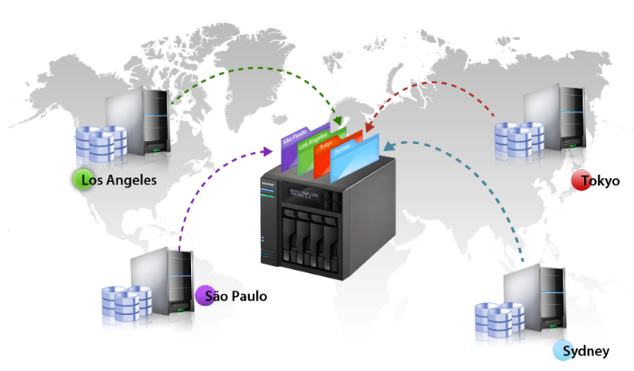
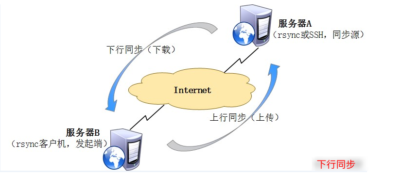
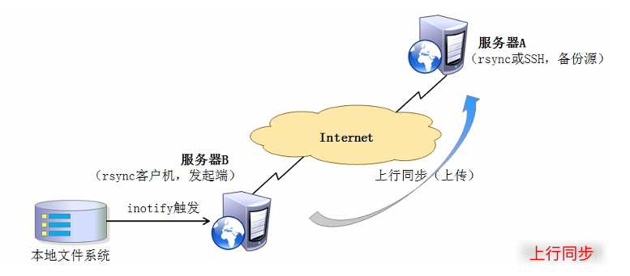
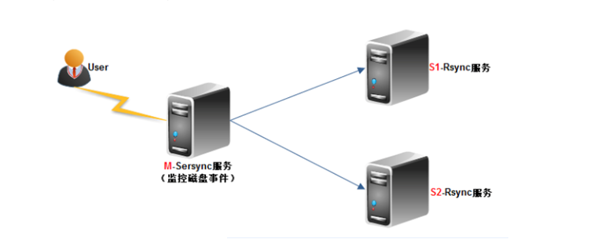
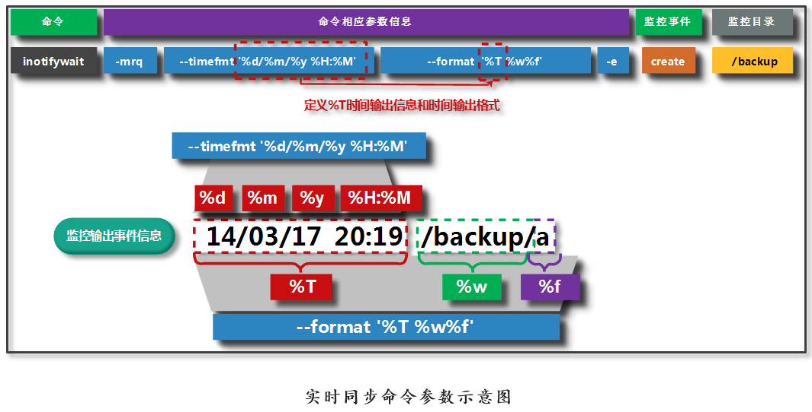
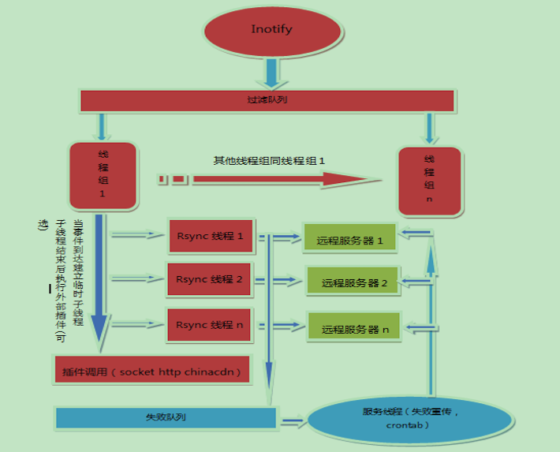

俗话说一个好汉三个帮，rsync 也是需要帮手才能更好的工作。

1. 两款工具对比
没有对比，就没有伤害！
Rsync 是一个开源的快速备份工具，可以在不同主机之间镜像同步整个目录树，支持增量备份、保持链接和权限、采用优化的同步算法、传输前执行压缩，因此非常适用于异地备份、镜像服务器等应用。

- [1] inotify
inotify 是一个 Linux 特性，它异步监控文件系统操作，比如读取、写入和创建。利用这个内核接口，第三方软件就可以监控文件系统下文件的各种变化情况，而 inotify-tools 正是实施这样监控的软件。
inotify 反应非常灵敏，用法非常简单，并且比 cron 任务的繁忙轮询高效得多。将 rsync 工具与 inotify 机制相结合，可以实现实时同步，只要原始位置发生变化，就立即启动增量备份操作，否则处于静默等待状态，这样避免了按固定周期备份时存在的延时性、周期过密性等问题。

- [2] sersync
国人周洋在金山公司也开发了类似的实时同步软件 sersync，该软件实际上就是在 inotify 软件基础上进行开发的，功能要更加强大些 ，多了定时重传机制，过滤机制了提供接口做 CDN，支持多线程橾作。
sersync 项目利用 inotify 与 rsync 技术实现对服务器数据实时同步的解决方案，其中 inotify 用于监控 sersync 所在服务器上文件系统的时间变化。rsync 是目前广泛使用的本地及异地数据同步工具，其优点是只对变化的目录数据操作，甚至是一个文件不同的部分进行同步，所以其优势大大超过使用挂接文件系统或 scp 等方式进行镜像同步。

- [3] 同步方式
单向同步: 如果仅需单向同步，只需要在服务端启动 rsyncd 服务，客户端无需启动服务，可直接执行 rsync 命令。
双向同步: 如需双向同步，则需要在两台服务器启动 rsyncd 服务，两台服务器互为 C/S 关系。
- [4] 使用总结
inotify-tools 只能记录下被监听的目录发生了变化(包括增加、删除、修改)，并没有把具体是哪个文件或者哪个目录发生了变化记录下来。而 sersync 可以记录下被监听目录中发生变化的(包括增加、删除、修改)具体某一个文件或某一个目录的名字。
当同步的目录数据量不大时，建议使用rsync+inotify-tools模式。当数据量很大(几百 G 甚至 1T 以上)文件很多时，建议使用 rsync+sersync 模式。
2. inotify 工具介绍
Inotify 是一种文件变化通知机制，Linux 内核从 2.6.13 开始引入。在 BSD 和 Mac OS 系统中比较有名的是 kqueue，它可以高效地实时跟踪 Linux 文件系统的变化。近些年来，以 fsnotify 作为后端，几乎所有的主流 Linux 发行版都支持 Inotify 机制。如何知道你的 Linux 内核是否支持 Inotify 机制呢？很简单，执行下面这条命令。
$ grep INOTIFY_USER /boot/config-$(uname -r)
CONFIG_INOTIFY_USER=y
inotify-tools 提供了一系列的命令行工具，这些工具可以用来监控文件系统的事件，除了要求内核支持 inotify 外不依赖于其他。inotify-tools 提供两种工具，第一个命令是 inotifywait，它是用来监控文件或目录的变化；第二个命令是 inotifywatch，它是用来统计文件系统访问的次数。

# inotifywait
# 实时监控/home的所有事件
$ inotifywait -rm /home
# inotifywatch
# 统计/home文件系统的事件
$ inotifywatch -v -e access -e modify -t 60 -r /home
- [1] inotifywait
# 语法格式
inotifywait [-hcmrq] [-e ] [-t ] [–format ] [–timefmt ] [ … ]
| 排序 | 命令参数 | 解释说明 |
|---|---|---|
| 1 | -r |
监视一个目录下的所有子目录 |
| 2 | -m |
接收到一个事情而不退出，无限期地执行；默认的行为是接收到一个事情后立即退出 |
| 3 | -e |
指定监视的事件 |
| 4 | -s |
输出错误信息到系统日志 |
| 5 | -q |
设置之后不显示输出的详细信息 |
| 6 | –exclude |
正则匹配需要排除的文件，大小写敏感 |
| 7 | –excludei |
正则匹配需要排除的文件，忽略大小写 |
| 8 | -t/timeout |
设置超时时间，如果为 0 则表示无限期地执行下去 |
| 9 | –timefmt |
指定时间格式，用于–format 选项中的%T 格式 |
| 10 | –format |
指定事件监听输出格式；%w/%f/%e/%T |
| 11 | –csv |
输出 csv 格式 |
| 12 | -d/–daemon |
已后台方式运行服务；需要指定–outfile 把事情输出到一个文件 |
| 13 | -o/–outfile |
输出事件到一个文件而不是标准输出 |
| 14 | @ |
排除不需要监视的文件，可以是相对路径，也可以是绝对路径 |
- [2] inotifywatch
# 语法格式
inotifywatch [-hvzrqf] [-e ] [-t ] [-a ] [-d ] [ … ]
| 排序 | 命令参数 | 解释说明 |
|---|---|---|
| 1 | -r |
监视一个目录下的所有子目录 |
| 2 | -e |
指定监视的事件 |
| 3 | -t |
设置超时时间，如果为 0 则表示无限期地执行下去 |
| 4 | –exclude |
正则匹配需要排除的文件，大小写敏感 |
| 5 | –excludei |
正则匹配需要排除的文件，忽略大小写 |
| 6 | –fromfile |
从文件读取需要监视的文件或排除的文件，一个文件一行，排除的文件以@开头 |
| 7 | @ |
排除不需要监视的文件，可以是相对路径，也可以是绝对路径 |
| 8 | -z/–zero |
输出表格的行和列，即使元素为空 |
| 9 | -a/–ascending |
以指定事件升序排列 |
| 10 | -d/–descending |
以指定事件降序排列 |
- [3] 可监听事件
| 排序 | 可监听事件 | 解释说明 |
|---|---|---|
| 1 | access |
文件读取 |
| 2 | modify |
文件更改 |
| 3 | attrib |
文件属性更改，如权限，时间戳等 |
| 4 | close_write |
以可写模式打开的文件被关闭，不代表此文件一定已经写入数据 |
| 5 | close_nowrite |
以只读模式打开的文件被关闭 |
| 6 | close |
文件被关闭，不管它是如何打开的 |
| 7 | open |
文件打开 |
| 8 | moved_to |
一个文件或目录移动到监听的目录，即使是在同一目录内移动，此事件也触发 |
| 9 | moved_from |
一个文件或目录移出监听的目录，即使是在同一目录内移动，此事件也触发 |
| 10 | move |
包括moved_to和moved_from |
| 11 | move_self |
文件或目录被移除，之后不再监听此文件或目录 |
| 12 | create |
文件或目录创建 |
| 13 | delete |
文件或目录删除 |
| 14 | delete_self |
文件或目录移除，之后不再监听此文件或目录 |
| 15 | unmount |
文件系统取消挂载，之后不再监听此文件系统 |
3. rsync+inotify-tools
值的注意的是，inotify-tools 工具至今还在持续有人维护，可以方式使用。
- [1] 调整 inotify 内核参数
# 文件末尾添加以下参数
$ sudo vim /etc/sysctl.conf
fs.inotify.max_queued_events = 16384 # 监控事件队列;
# 表示调用inotify_init时分配给instance中可排队的
# event的数目的最大值，超出这个值的事件被丢弃，但会
# 触发IN_Q_OVERFLOW事件
fs.inotify.max_user_instances = 128 # 最多监控实例数;
# 表示每一个真实用户ID可创建的instatnces的数量上限
fs.inotify.max_user_watches = 524288 # 每个实例最多监控目录数;
# 表示每个instatnces可监控的最大目录数量，如果监控
# 的文件数目巨大，需要根据情况，适当增加此值的大小
# 永久生效方式
# Debian, RedHat
$ echo fs.inotify.max_user_watches=524288 | \
sudo tee -a /etc/sysctl.conf && \
sudo sysctl -p
# ArchLinux
$ echo fs.inotify.max_user_watches=524288 | \
sudo tee /etc/sysctl.d/40-max-user-watches.conf && \
sudo sysctl --system
# 也可以从proc中获取对应参数信息
$ ll /proc/sys/fs/inotify
-rw-r--r-- 1 root root 0 Dec 17 15:05 max_queued_events
-rw-r--r-- 1 root root 0 Dec 17 15:05 max_user_instances
-rw-r--r-- 1 root root 0 Dec 17 15:05 max_user_watches
# 通过man手册查到inotify的详细说明
$ man 7 inotify
/proc/sys/fs/inotify/max_queued_events
The value in this file is used when an application calls
inotify_init(2) to set an upper limit on the number of
events that can be queued to the corresponding inotify
instance. Events in excess of this limit are dropped, but
an IN_Q_OVERFLOW event is always generated.
/proc/sys/fs/inotify/max_user_instances
This specifies an upper limit on the number of inotify
instances that can be created per real user ID.
/proc/sys/fs/inotify/max_user_watches
This specifies an upper limit on the number of watches
that can be created per real user ID.
- [2] 安装 inotify-tools 工具
# 安装编译器
$ yum -y install gcc gcc-c++
# 安装工具 - 直接安装
$ yum install -y inotify-tools
# 安装工具 - 手动编译
# https://github.com/rvoicilas/inotify-tools/
$ tar xvfz inotify-tools-3.20.1.tar.gz
$ cd inotify-tools-3.20.1
$ ./configure && make && make install
- [3] 使用 inotifywait 命令进行监控测试
# 实时监控修改、创建、移动、删除操作
# 递归整个目录: -r
# 持续的进行监控: -m
# 指定监控的事件: -e
$ inotifywait -mrq -e modify,create,move,delete /var/www/html
/var/www/html CREATE abc.txt
/var/www/html MODIFY abc.txt
/var/www/html DELETE abc.txt
- [4] 编写触发式上行同步脚本
# [版本一]
# 已循环形式触发同步操作，且每次都是全量同步
# 相当于有10个文件发生变化就触发10次全量同步，还不如死循环
INOTIFY_CMD="inotifywait -mrq --format '%Xe %w%f' -e modify,create,attrib,move,delete /var/www/html/"
RSYNC_CMD="rsync -azH --delete --password-file=/etc/rsync.password /var/www/html/ escape@192.168.31.191::aptbackup"
${INOTIFY_CMD} | while read DIRECTORY EVENT FILE; do
if [ $(pgrep rsync | wc -l) -le 0 ]; then
${RSYNC_CMD}
fi
done
# [版本二]
# 虽然利用到了inotofy的特点，只同步改变的文件
# 但是并没有进行操作行为更加细致的区分，执行不同的处理
REMOTE_IP="192.168.31.191"
REMOTE_USER="escape"
PASSWORD="/etc/rsync.password"
INOTIFY_DIR="/var/www/html/"
INOTIFY_CMD="inotifywait -mrq -e modify,create,attrib,move,delete ${INOTIFY_DIR}"
${INOTIFY_CMD} | while read DIRECTORY EVENT FILE; do
if [ -f ${FILE} ]; then
rsync -azH --password-file=${PASSWORD} ${DIRECTORY}/${FILE} ${REMOTE_USER}@${REMOTE_IP}::backup
else
rsync -azH --delete --password-file=${PASSWORD} ${DIRECTORY}/${FILE} ${REMOTE_USER}@${REMOTE_IP}::backup
fi
done
# [版本三]
# 基本可以再生产中使用了
remote_user="root"
remote_ip="192.168.31.191"
remote_model="backup"
rsync_passwd_file="/etc/rsyncd.passwd"
inotify_dir="/var/www/html"
inotify_cmd="inotifywait -mrq --format '%Xe:::%w%f' -e modify,create,delete,attrib,close_write,move ${inotify_dir}"
# 把监控到有发生更改的文件路径列表循环
${inotify_cmd} | while read inotify_info; do
# 事件类型和文件路径
EVENT=$(echo ${inotify_info} | awk -F':::' '{print $1}')
FILES=$(echo ${inotify_info} | awk -F':::' '{print $2}')
# 增加、修改、写入完成、移动进事件
if [[ $EVENT =~ 'CREATE' ]] || [[ $EVENT =~ 'MODIFY' ]] || [[ $EVENT =~ 'CLOSE_WRITE' ]] || [[ $EVENT =~ 'MOVED_TO' ]]; then
echo 'CREATE or MODIFY or CLOSE_WRITE or MOVED_TO'
rsync -avzcR --password-file=${rsync_passwd_file} ${FILES} ${remote_user}@${remote_ip}::${remote_model}
fi
# 删除、移动出事件
if [[ $EVENT =~ 'DELETE' ]] || [[ $EVENT =~ 'MOVED_FROM' ]]; then
echo 'DELETE or MOVED_FROM'
rsync -avzR --delete --password-file=${rsync_passwd_file} ${FILES} ${remote_user}@${remote_ip}::${remote_model}
fi
# 修改属性事件
# 如果修改属性的是目录则不同步，因为同步目录会发生递归扫描
if [[ $EVENT =~ 'ATTRIB' ]]; then
echo 'ATTRIB'
if [ ! -d "$INO_FILE" ]; then
rsync -avzcR --password-file=${rsync_passwd_file} ${FILES} ${remote_user}@${remote_ip}::${remote_model}
fi
fi
done
- [5] 定时进行全量同步
# 因为inotify只在启动时会监控目录，没有启动期间的文件发生更改
# 所以我们每2个小时做1次全量同步，防止各种意外遗漏，保证目录一致
$ crontab -e
* */2 --- rsync -avz --password-file=/etc/rsync.passwd \
/www/var/html root@192.168.31.191::backup
4. sersync 工具介绍
sersync 项目利用 inotify 与 rsync 技术实现对服务器数据实时同步的解决方案，其中 inotify 用于监控所在服务器上文件系统的时间变化，rsync 是目前广泛使用的本地及异地数据同步工具，其优点是只对变化的目录数据操作。
目前使用的比较多的同步程序版本是 inotify-tools，另外一个是 google 开源项目 Openduckbill (依赖于 inotify-tools 工具)，这两个都是基于脚本语言编写的，其设计思路同样是采用 inotify 与 rsync 命令。该项目的优点有以下优点，这是国人研发的呦。
- [1] 工具特点
- 使用
C++编写，对于Linux系统文件产生的临时文件和重复的文件操作会进行过滤，再结合了rsync同步的时候，会减少运行时消耗的本地及网络资源，因此速度会更快； - 相比较上面两个项目，
sersync配置起来很简单，其中bin目录下是已经编译好的二进制文件，配合bin目录下的xml文件直接使用即可； - 使用多线程进行同步(即可以并发同步多个不同文件)，尤其在同步较大文件时，能够保证多个服务器实时保持同步状态；
sersync自带出错处理机制，通过失败队列对出错的文件重新同步，如果仍旧失败，则每10个小时对同步失败的文件再重新同步；sersync自带crontab功能，只需在xml配置文件中开启，即可按预先的配置，隔一段时间整体同步一次；sersync自带socket与http的协议拓展，可以满足有特殊需求的公司二次开发；

- [2] 设计要点
线程组线程是等待线程对立的守护线程，当事件队列中有数据产生的时候，线程组守护线程就会逐个唤醒同步线程，当队列中
inotify事件较多的时候，同步线程就会被全部唤醒一起工作。这样设计的目的是能够同时处理多个inotify事件，从而提升服务器的并发同步能力。之所以称之为线程组线程，是因为每个线程在工作的时候，会根据服务器上新写入文件的数量建立子线程，子线程可以保证所有的文件与各个服务器同时同步，当要同步的文件较大的时候，这样的设计可以保证各个远程服务器可以同时获得要同步的文件。服务器线程的作用有三个(保证主服务器和从服务器数据一致且实时)：第一就是，处理同步失败的文件，将这些文件再次同步，对于再次同步失败的文件会生成
rsync_fail_log.sh脚本，记录失败的事件。第二就是，同时每个10小时执行脚本一次，同时清空脚本。第三就是，还有就是crontab功能，可以每隔一定事件，将所有路径整体同步一次。过滤队列的建立是为了过滤短时间内产生的重复的
inotify信息，例如在删除文件夹的时候，inotify就会同时产生删除文件夹里的文件与删除文件夹的事件，通过过滤队列，当删除文件夹时间产生的时候，会将之前加入队列的删除文件的事件全部过滤掉，这样只产生一条删除文件夹事件，从而减轻了同步的负担。同时对于修改文件的操作的时候，会产生临时文件的重复操作。
- [3] sersync 同步参数说明
| 排序 | Sersync 参数 | 说明 |
|---|---|---|
| 1 | -r |
作用是在开启实时监控之前对主服务器目录与远程目标机目录进行一次整体同步；如果需要将 sersync 运行前，主服务器目录下已经存在的所有文件或目录全部同步到远端，则需要指定-r 参数运行 sersync，将本地与远程整体同步一次；如果设置了过滤器，即在 xml 配置文件中 filter 为 true，则暂时不能使用-r 参数进行整体同步 |
| 2 | –o confxml.xml |
不指定-o 参数时，sersync 可执行文件目录下的默认配置文件 confxml.xml；如果需要使用其他的配置文件，可以使用-o 参数指定其他配置文件，通过-o 参数，我们可以指定多个不同的配置文件，从而实现 sersync 多进行多实例的数据同步 |
| 3 | –n number |
该参数为指定默认的线程池的线程总数；如果不指定，默认启用线程池数量为 10 个 |
| 4 | -d |
该参数为后台启动服务，在通常情况下，使用-r 参数对本地到远程整体同步一遍后，在后台运行此参数启动守护进程实时同步，在第一次整体同步时，-d 和-r 参数经常会联合使用 |
| 5 | -m pluginName |
该参数为不进行同步，只运行插件；例如 sersync –m command，则在监控到时间后，不对远程目标服务器进行同步，而是直接运行 command 插件 |
5. rsync+sersync
在同步主服务器上开启
sersync服务，sersync负责监控配置路径中的文件系统事件变化，然后调用rsync命令把更新的文件同步到目标服务器。
- Sersync 项目简介与框架设计
- 已经没有人维护了，请谨慎使用哈！
- [1] 备份服务器开启 rsyncd 服务
$ sudo vim /etc/rsyncd/rsyncd.conf
# 主配置参数，适用于所有模块使用
uid = root
gid = root
use chroot = no
read only = false
hosts allow=192.168.31.100/24
hosts deny=*
ignore errors
max connections = 200
pid file = /var/run/rsyncd.pid
lock file = /var/run/rsync.lock
motd file = /etc/rsyncd/rsyncd.motd
auth users = escape
secrets file = /etc/rsyncd/rsyncd.password
log file = /var/log/rsync.log
transfer logging = yes
log format = %t %a %m %f %b
syslog facility = local3
timeout = 300
# 设置自定义模块，目录必须事先存在
[blog]
comment = this is my blog
path = /var/www/html/blog
- [2] 备份服务器开启配置权限认证
# 设置同步密码，每行一个可以添加多个
$ sudo echo "escape:123456" > /etc/rsyncd/rsyncd.password
# 必须设置600的权限
$ sudo chmod 600 /etc/rsyncd/rsyncd.password
- [3] 备份服务器开启 rsync 守护进程
# 已守护进程的方式启动服务
$ sudo rsync --daemon --config=/etc/rsyncd/rsyncd.conf
# 查看服务
$ sudo ps -ef|grep rsync
root 153 0 0 15:05 ? 00:00:00 rsync --daemon
root 155 12 0 15:05 pts/1 00:00:00 grep --color=auto rsync
$ sudo netstat -tunpl|grep :873
tcp 0 0 0.0.0.0:873 0.0.0.0:- LISTEN 153/rsync
tcp6 0 0 :::873 :::- LISTEN 153/rsync
# 配置开机自启动，当然也可以协程脚本
$ sudo pkill rsync
# 其实安装rsync之后会在/etc/init.d/目录下生成一个配置脚本
$ sudo echo "/usr/bin/rsync --daemon --config=/etc/rsyncd/rsyncd.conf" >> /etc/rc.local
- [4] 同步服务器配置相关权限
# 设置同步密码和权限
$ sudo echo '123456' > /etc/rsync.password
$ sudo chmod 600 /etc/rsync.password
# 测试是否可同步
$ sudo rsync -avzP --password-file=/etc/rsync.password /home/root/escape escape@172.17.0.2::blog
- [5] 同步服务下载 sersync 工具
# 下载sersync的可执行文件版本
https://code.google.com/archive/p/sersync/downloads
# 下载并解压，感觉已经不更新了，2011年的
$ sudo wget https://storage.googleapis.com/google-code-archive-downloads/v2/code.google.com/sersync/sersync2.5.4_64bit_binary_stable_final.tar.gz
# 规范sersync目录结构，非必须
$ sudo mkdir -pv /usr/local/sersync/bin
$ sudo mkdir -pv /usr/local/sersync/conf
$ sudo mkdir -pv /usr/local/sersync/logs
$ sudo cp -r GNU-Linux-x86/sersync2 /usr/local/sersync/bin
$ sudo cp -r GNU-Linux-x86/confxml.xml /usr/local/sersync/conf
- [6] 设置 sersync 的配置文件
<?xml version="1.0" encoding="ISO-8859-1"?>
<head version="2.5">
<!-- IP地址和端口号是针对插件的保留字段，对于同步功能没有任何作用，默认保留即可 -->
<host hostip="localhost" port="8008"></host>
<!-- 调试模式的开关 -->
<!-- 开启debug模式会在sersync正在运行的控制台，打印inotify时间与rsync的同步命令 -->
<debug start="false"/>
<!-- xfs文件系统的开关 -->
<!-- 对于xfs文件系统的用户，需要将这个选项开启 -->
<fileSystem xfs="false"/>
<!-- filter文件过滤功能 -->
<!-- 将start设置为true后开启过滤功能，在exclude标签中填写正则表达式 -->
<filter start="false">
<exclude expression="(.*)\.svn"></exclude>
<exclude expression="(.*)\.gz"></exclude>
<exclude expression="^info/*"></exclude>
<exclude expression="^static/*"></exclude>
</filter>
<!-- inotify监控参数设定 -->
<inotify>
<delete start="true"/>
<createFolder start="true"/>
<createFile start="false"/>
<closeWrite start="true"/>
<moveFrom start="true"/>
<moveTo start="true"/>
<attrib start="false"/>
<modify start="false"/>
</inotify>
<sersync>
<!--本地文件监控与远程同步设置-->
<!--如果存在多个目录，可以添加多段进行配置-->
<localpath watch="/home/root/escape">
<!--定义要同步的服务器IP和模块名(例如上述的blog等)-->
<remote ip="192.168.31.100" name="blog"/>
<!--<remote ip="192.168.8.39" name="tongbu"/>-->
<!--<remote ip="192.168.8.40" name="tongbu"/>-->
</localpath>
<!-- rsync相关参数设置 -->
<!-- 配置使用rsync同步时候的命令 -->
<rsync>
<!-- 可以自定义rsync的同步参数，默认是-artuz -->
<commonParams params="-avzP"/>
<!-- 设置为true的时候，使用rsync的认证模式传送 -->
<auth start="false" users="root" passwordfile="/etc/rsync.password"/>
<!-- 默认端口 port=874 -->
<userDefinedPort start="false" port="874"/>
<!-- 默认超时时间 timeout=100 -->
<timeout start="false" time="100"/>
<ssh start="false"/>
</rsync>
<!-- 失败日志脚本配置 -->
<!-- 默认情况下每60mins执行一次 -->
<failLog path="/usr/local/sersync/logs/rsync_fail_log.sh" timeToExecute="60"/>
<!--crontab定期整体同步功能 默认时间为600mins-->
<crontab start="false" schedule="600">
<crontabfilter start="false">
<exclude expression="*.php"></exclude>
<exclude expression="info/*"></exclude>
</crontabfilter>
</crontab>
<plugin start="false" name="command"/>
</sersync>
<!-- 插件设置 -->
<plugin name="command">
<!--prefix /opt/tongbu/mmm.sh suffix-->
<param prefix="/bin/sh" suffix="" ignoreError="true"/>
<filter start="false">
<include expression="(.*)\.php"/>
<include expression="(.*)\.sh"/>
</filter>
</plugin>
<plugin name="socket">
<localpath watch="/opt/tongbu">
<deshost ip="192.168.138.20" port="8009"/>
</localpath>
</plugin>
<plugin name="refreshCDN">
<localpath watch="/data0/htdocs/cms.xoyo.com/site/">
<cdninfo domainname="ccms.chinacache.com" port="80" username="xxxx" passwd="xxxx"/>
<sendurl base="http://pic.xoyo.com/cms"/>
<regexurl regex="false" match="cms.xoyo.com/site([/a-zA-Z0-9]*).xoyo.com/images"/>
</localpath>
</plugin>
</head>
- [7] 开启 sersync 守护进程同步数据
# 配置sersync环境变量
$ sudo echo 'export PATH=/usr/local/sersync/bin:$PATH' >> /etc/profile
$ sudo source /etc/profile
# 启动sersync命令
$ sudo sersync2 -r -d -o /usr/local/sersync/conf/confxml.xml
# 多实例的情况下仅第一个模块的路径能同步，其他模块下面的路径不能同步
# 因此需要在/usr/local/sersync/conf目录下复制多个配置文件一同启动